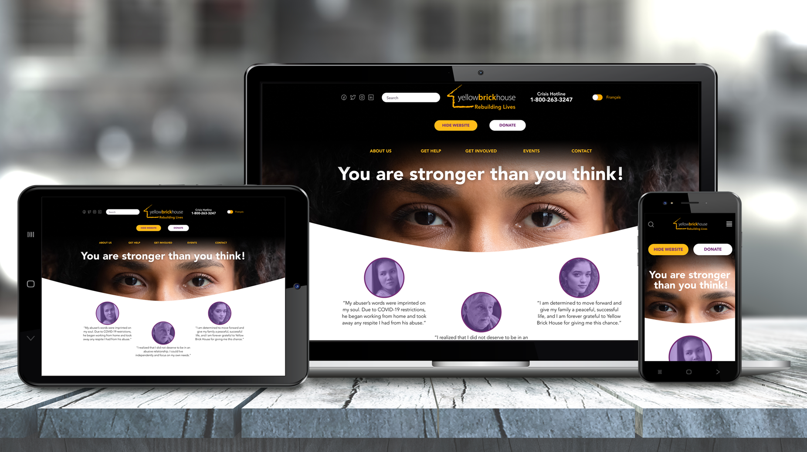

UI Redesign
Designing a more intuitive experience for users
Mobile App Development
Connecting more donors and charitable organizations seamlessly
Responsive Website Redesign
Establishing credibility and creating a safe space to inspire change for donors and victims
